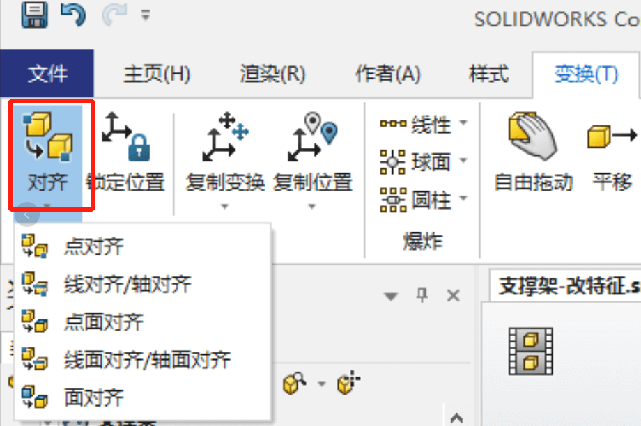
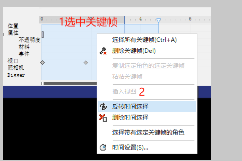
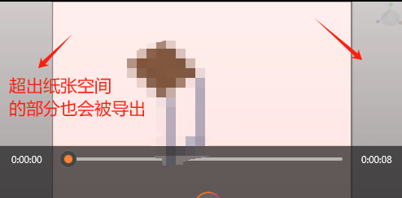
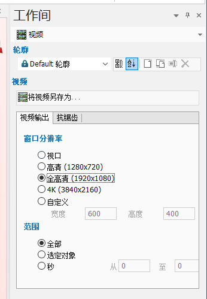

教程-DSComposer
1概述
SOLIDWORKS Composer 是一种 3D 工具，它可以重用 3D 工程数据以创建图形内容，以便对技术交流资料（例如制造装配体说明、产品手册、安装说明、维修手册、培训手册以及市场营销宣传册和销售投标书）中的流程和步骤进行说明。

产品手册
交互动画
2基础知识
软件界面
①工具栏
②快速访问栏
③设计树窗口（角色）
④属性窗口
⑤视口（图形区域）
⑥工作间
⑦时间轴窗口

设计树
装配角色：
几何角色包括：零件、装配体、组件。
协同角色：
标记工具，如标注和测量、标签和编号、图像等
视图：
角色的快照，记录照相机位置角度。
属性：
软件中的实体对象。用户可以隐藏或显示，或更改位置和属性。
对实体的描述。角色和视口都有属性
中性属性：角色的默认属性
视口：
显示角色的窗口，也称图形区域
3封面和局部视图
4创建爆炸视图

5创建其他爆炸视图
6创建材料明细表
7创建一个动画
关键帧编辑
反转关键帧（倒放）
导出
【另存为-视频】
视频的尺寸会是按程序显示的实际大小输出
【工作间-视频】
8创建交互内容
事件
链接类型：
1 | file：// 打开一个文件 |
9创建排演动画
10更新文件
11发布交互内容
纹理
参考
属性
注解属性 - 2024 - SOLIDWORKS Composer 帮助